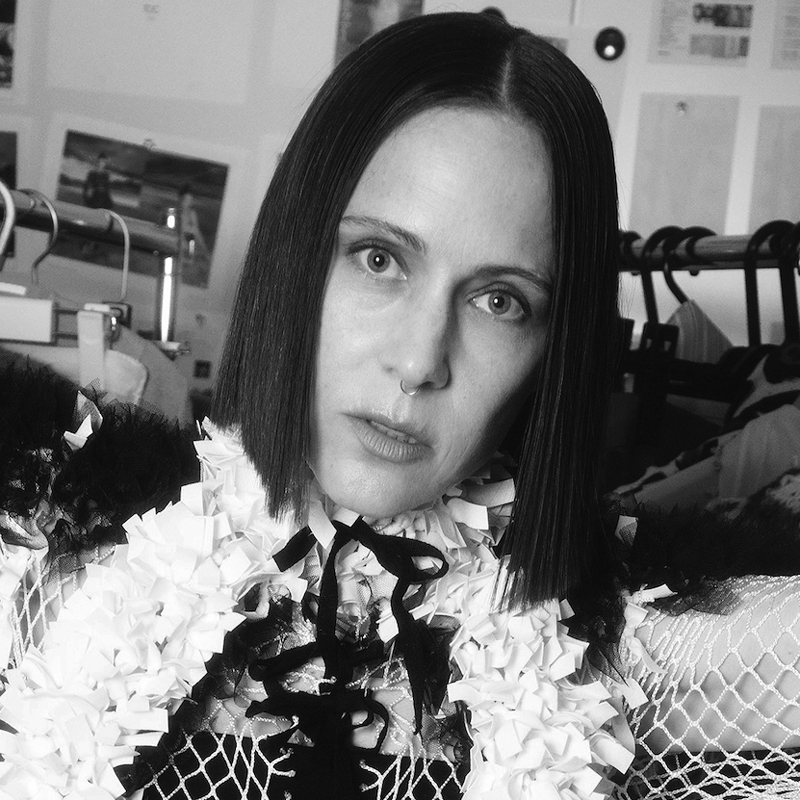
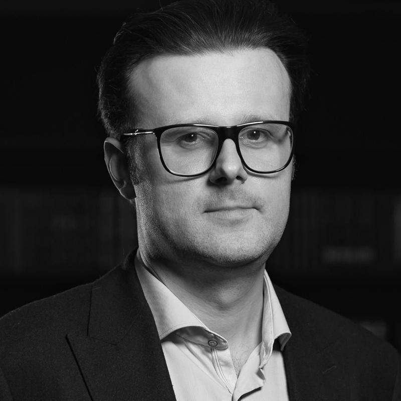
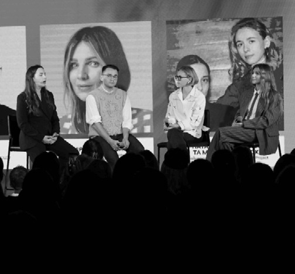
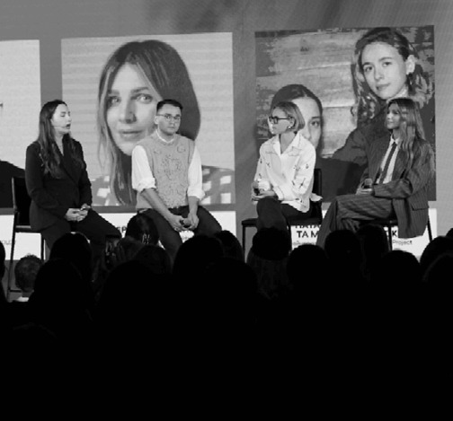
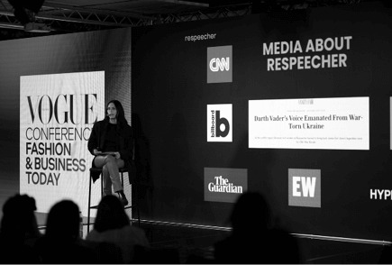
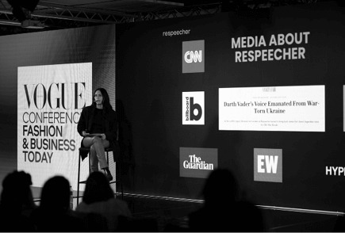
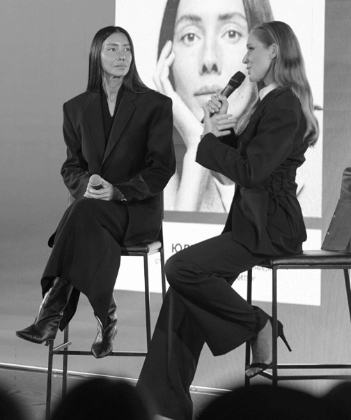
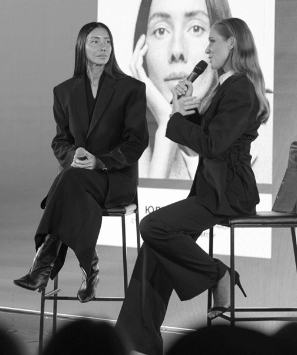

ЛОКАЦІЯ: UNIT.City, Київ, вул. Дорогожицька, 3 Як дістатися
Vogue Ukraine Conference: Visions of the Future
Про проєкт
Конференція Vogue Ukraine – масштабна професійна подія, яка об’єднує світових і вітчизняних лідерів у сферах моди, медіа, освіти, цифрових технологій, бізнесу та громадського активізму. Це мультидисциплінарна ініціатива для пошуку відповідей на найактуальніші виклики й запити сьогодення.
Цьогорічна конференція відбудеться в живому форматі – вже вдруге з початку повномасштабної війни в Україні.
Конференція Visions of the Future охопить такі теми:
Які тренди формуватимуть моду, як брендам адаптуватися до нової реальності та задовольнити потреби майбутнього покоління - ключові висновки звіту WGSN про споживачів майбутнього Future Consumer 2026
Штучний інтелект у креативних індустріях: як ШІ може розширити можливості дизайнерів і фотографів. Еволюція цифрових медіа. Презентація інструментів та технологій для генерації контенту
Технології, сталий розвиток та інклюзивність: виклики та можливості для професіоналів. Дискусія за участі українських дизайнерів
Вплив метавсесвіту на фешн-індустрію: цифрова мода та NFT, персоналізація та кастомізація. Диджитал-перспективи та їхній вплив на моду і бізнес
КВИТКИ
Regular
У вартість квитка входить: відвідування конференції, кава-паузи, обід.
У вартість квитка входить: відвідування конференції, зарезервоване місце в першому або другому ряду, кава-паузи, обід.
Частина прибутку від продажу charity-квитків перераховується до фонду Veteranka.
У вартість квитка входить: відвідування у конференції, гарантоване місце в першому або другому ряду, кава-паузи, обід, закритий ланч зі спікерами 21 жовтня .
головна редакторка американського Vogue, редакційна директорка видавничого Дому Condé Nast
Головна редакторка американського Vogue і реформаторка світу глянсових медіа дама Анна Вінтур – одна з найвпливовіших фігур у модній індустрії. З 2020 року обіймає посаду редакційної директорки Condé Nast, на якій керує наповненням майже всіх брендів видавничого Дому. Два роки поспіль Вінтур особисто підтримує захід Vogue Ukraine Designers Showcase, ініційований редакцією українського Vogue у межах Тижня моди в Парижі.
Веня Брикалін
головний редактор українського Vogue
Веня Брикалін був призначений головним редактором українського Vogue у травні 2023 року. На цій посаді він розвиває унікальний візуальний стиль видання та посилює позиції бренду на міжнародній сцені. Торік Брикалін увійшов до рейтингу найвпливовіших людей в індустрії BoF 500 за версією ресурсу Business of Fashion. У межах Vogue UA Conference він проведе паблік-ток із Тіффані Годой, керівницею редакційного контенту Vogue Japan.
Катерина Осадча
Телеведуча
Ведучою Vogue UA Conference: Visions of the Future стане журналістка та соціальна діячка Катерина Осадча. Від початку повномасштабного вторгнення вона опікується пошуком цивільних, зниклих під час бойових дій та на окупованих територіях, що масштабувалося в соціальний проєкт «Знайти своїх». У співпраці з владними структурами Осадча допомагає створити дієву юридичну базу для розшуку та порятунку людей. У листопаді 2023 року Катерина запустила іменний фонд, що займається звільненням цивільних із полону, а також дітьми, які залишилися без родинної опіки.

Тіффані Годой
керівниця редакційного контенту, Vogue Japan
Журналістка, редакторка, авторка відео та подкастів, Годой розпочинала кар’єру в Токіо. Протягом останніх двох десятиліть працювала з безліччю медіа, зокрема Vogue, CNN і Highsnobiety, а також видала книгу «Порушення дефіциту стилю: вулична мода Харадзюку – Токіо». У 2010 році стала співзасновницею мультимедійного журналу та креативної студії The Reality Show. Тіффані є всесвітньо визнаною експерткою з вуличної моди та культури. У січні 2022-го вона була призначена редакційною керівницею японського Vogue. Мешкає в Токіо.
Лілія Літковська
дизайнерка, власниця бренду Litkovska
Колекції Лілії Літковської з 2017 року демонструються в офіційному розкладі Паризького тижня моди та представлені в київському ЦУМі, лондонському Selfridges, паризьких La Samaritaine, Leclaireur і токійському Dover Street Market. Дизайнерка переосмислює українські традиційні мотиви і просуває сталу моду через екологічну демі-кутюр-лінію «Артизаналь». 2020 року Літковська заснувала навчальну платформу Schooll of Art x Craft, де дає старт новому поколінню професіоналів модної індустрії – дизайнерам і керівникам модних брендів.
Марк Гвідуччі
креативний редакційний директор Vogue US
З 2020 року обіймає посаду креативного редакційного директора Vogue, відповідає за створення контенту для журналу, сайту, цифрових мереж у форматах тексту, аудіо та відео. До цього був артредактором Vogue та керівним редактором Vanity Fair. Марк Гвідуччі є співголовою ініціативи Friends of the Costume Institute Музею Метрополітен. Вивчав історію мистецтв в Прінстонському університеті, мешкає в Нью-Йорку.
Тамара Клое Легія
старша консультантка з прогнозування трендів, WGSN
Представниця найбільшої аналітичної платформи WGSN, що визначає майбутні тренди, Тамара допомагає найвідомішим світовим брендам у пошуку ефективних бізнес-рішень. Вона входить до команди управління операційною радою WGSN Sustainability Board, що працює над ініціативами сталого розвитку. Має освіту в галузі моди та психології Лондонського коледжу моди LCF.
Юлія Свириденко
Перша Віцепрем’єр-міністерка — Міністерка економіки України
Економістка, Юлія Свириденко з 2021 року обіймає посаду Першої віцепрем'єрки — Міністерки економіки України. Разом із командою міністерства залучає іноземні інвестиції до України навіть в умовах війни. Під її керівництвом було запущено низку проєктів з підтримки населення та бізнесу, сприяння експорту. Юлія Свириденко опікується системними реформами економіки задля інтеграції у світові ринки, впроваджує грантові програми для малого та середнього бізнесу і підтримує розвиток української легкої промисловості.
Одета Джейс
засновниця Storyfounders
Стратегиня нового покоління, експертка з інновацій та технологій, яка працює з прогнозуванням тенденції та цифрових рішень для модної індустрії. У 2018 році Одета заснувала консалтингову агенцію Storyfounders, що фокусується на дослідженнях майбутнього споживацької поведінки, цифрової культури, технологій Web3 та можливостей їхньої інтеграції у бізнес-стратегії. На основі цієї експертизи Одета формує чіткі дорожні карти для фешн-брендів.

Віктор Галасюк
економіст, президент Української асоціації Римського клубу
Доктор економічних наук. Автор курсу «Економічна інженерія». Ад’юнкт-професор Києво-Могилянської бізнес-школи (kmbs) та Київської школи державного управління (КШДУ), член Наглядової ради Київського міжнародного економічного форуму (КМЕФ) та WWF CEE. Прихильник промислового та інноваційного розвитку, що консультує парламентарів та інвесторів.
У 2022 році Віктор очолив міжнародну освітню ініціативу Ukraine Global Faculty, яка організовує для українців лекції провідних професорів закордонних університетів та експертів зі світовим ім’ям.
Софія Панич
Бʼюті експертка
Ньюйорківка Софія почала свою кар’єру у видавничому домі Condé Nast: спочатку в журналі Glamour, а потім в Allure, де пропрацювала майже десять років. Як редакторка відділу краси в друкованому виданні, а пізніше в онлайні Софія багато писала про індустрію, керувала цифровою стратегією бренду та запустила франшизу Best of Beauty. У 2019 році переїхала до Лондона, де працювала в медіа Popsugar UK та ретейлері Farfetch. Сьогодні вона незалежна авторка і консультантка, що співпрацює з престижними брендами, як-от Pat McGrath Labs. Пишаючись українським походженням, Софія використовує свої цифрові платформи, щоби підвищити обізнаність про війну в Україні.
Пол Пападімітріу
футурист, засновник Intelligencr
Досліджує досвід і прогнозує майбутнє людства в умовах глобалізації, технологічного прогресу та розвитку застосування ШІ. Як ми будемо купувати, подорожувати та переосмислювати щоденні дії в майбутньому? Що розвиток технологій означає для наших цінностей, культури, суспільств, міст, добробуту та якості життя? Пол відшукує відповіді на ці запитання, покладаючись на понад 20 років експертизи в консалтингу для венчурних компаній, стартапів і світових брендів, як-от Bvlgari, LVMH, BMW і Unilever, – і ділиться ними на виступах по всьому світі.
Альона Пономаренко
редакторка відділу краси Vogue Ukraine
Журналістка та редакторка з 15-річним досвідом, Альона Пономаренко має магістерську ступінь з права. Вона залишила юридичну кар’єру, щоб писати про красу, прийняття себе та ментальне здоров’я. Курує великі соціальні знімання-проєкти українського Vogue та б’юті-додаток. Тексти Альони постійно публікуються в чеському Vogue.
Віолетта Федорова
шеф-редакторка vogue.ua
З 2017 року Віолетта Федорова очолює диджитал-редакцію українського Vogue. За цей час vogue.ua став важливим майданчиком популярізації української моди та культури всередині країни і закордоном, а аудиторія проєкту вирісла більш ніж втричі. У сфері її інтересів – мода як бізнес і комунікації у fashion-індустрії. Постійна контриб'юторка Vogue Czechoslovakia, курує курс Fashion у Kyiv Academy of Media Arts, читає лекції з історії моди. У межах конференції проведе паблік-ток, присвячений майбутньому української модної індустрії.
Анна Октябрь
дизайнерка, засновниця бренду Anna October
Дизайнерка Анна Октябрь заснувала однойменний бренд у 2010 році. Колекції Anna October представлені в Galeries Lafayette, Moda Operandi, SSENSE, FWRD та Revolve. Серед прихильниць бренду – Гейлі Бібер, Серена Вільямс, Леді Гага та Меган Фокс. У 2022 році Октябрь увійшла до списку найвпливовіших діячів моди BoF 500 і представила свою колекцію в межах офіційного розкладу паризького Тижня моди. В останні два роки дизайнерка презентувала колаборації з американським брендом J.Crew.
Яаков Любецький
UX-дизайнер, YouTube
Яков – UX-дизайнер, прототипіст ШІ та співзасновник лабораторії GenAI в компанії YouTube. Він допомагає командам YouTube та Google, а також креаторам, що використовують ці платформи, досліджувати нові можливості інноваційних технологій і впевнено їх використовувати.
TBA
ЗАПИТАННЯ ТА ВІДПОВІДІ
Чи можу я придбати квиток у день події?
У вас буде можливість придбати квиток у день проведення заходу за ціною “в день проведення” за умови наявності квитків.
Чи можна повернути квитки?
Повернення квитків можливе лише у випадку скасування події.
Чи відбудеться подія у разі оголошення повітряної тривоги?
Якщо буде оголошено повітряну тривогу, конференцію буде зупинено, всі учасники заходу евакуюються до укриття в місці проведення події.
Де знаходиться найближче укриття?
На території UNIT.City. Перед початком заходу гостям буде надано інструктаж та показані шляхи евакуації до найближчого укриття.
Чи буде онлайн-трансляція і доступ до відеозапису виступів конференції після її закінчення?
Онлайн-трансляція і відеозаписи виступів не передбачені.


 



 

 
